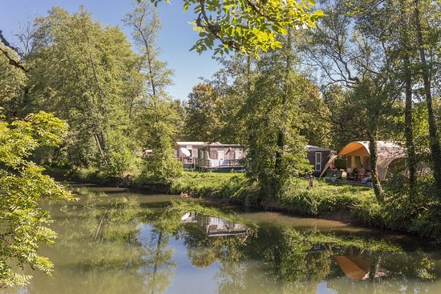
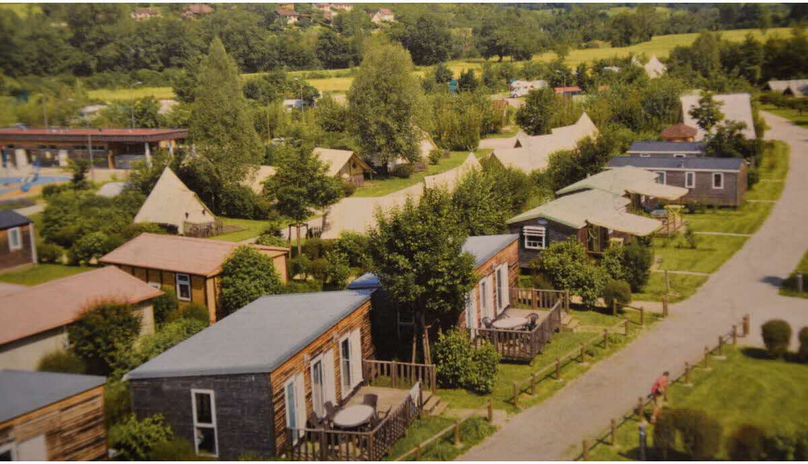
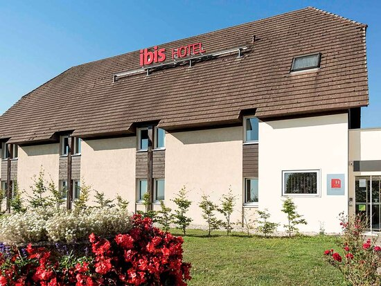
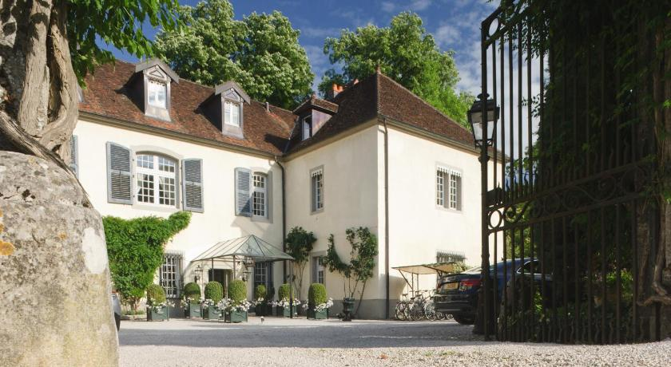

Aquí podras encontrar donde alojarte en Besançon
Durante más de 40 años, el camping Val de Bonnal le ha dado la bienvenida para unas vacaciones inolvidables en el corazón del Franco Condado. Las aguas del Ognon, un río que serpentea a través del sitio, han alimentado durante mucho tiempo un molino. Hoy marcan la vida de los veraneantes. El Val de Bonnal se encuentra en una finca excepcional de 150 ha de agua y vegetación, que ofrece todas las alegrías del mar en el campo. ¡Un verdadero paraíso para los niños y los amantes de las actividades al aire libre! Con una calificación de 5 estrellas, este establecimiento de tamaño humano ofrece una amplia gama de alojamiento de calidad y actividades de ocio, en armonía con la naturaleza. Sus vacaciones se colocarán bajo el signo de la tranquilidad, en un ambiente íntimo y familiar
Para reservar pinche aquí
Nuestro camping ecológico y ecológico La Roche d'Ully, 106 ubicaciones se encuentra en el corazón del valle del Loue, en el Doubs y las montañas del Jura, en el borde de la ciudad histórica de Ornans. Nos complace darle la bienvenida en nuestro campamento de lujo, que combina la naturaleza del Jura, el encanto, la originalidad y las relaciones humanas en las que encontrará : cabañas, alojamientos inusuales, cabañas que combinan tradición y modernidad, así como parcelas de camping de gran tamaño confort ( + 120m², electricidad, agua y saneamiento). La calma, el espacio y la discreción son un lujo que te ofrecemos. Bien integrado en el paisaje de las montañas del Jura, el Camping La Roche d'Ully, está comprometido con un enfoque medioambiental y obtuvo la preciosa etiqueta ecológica europea en 2017 para limitar el impacto de nuestra actividad en la naturaleza
Para reservar pinche aquí
El ibis Besançon Marchaux está situado en Marchaux y ofrece recepción 24 horas, conexión Wi-Fi gratuita en todas las instalaciones y restaurante. La autopista A36 está situada junto al hotel y ofrece acceso directo a Mulhouse y Beaune. Todas las habitaciones disponen de aire acondicionado, TV de pantalla plana, escritorio, teléfono y armario. El baño incluye secador de pelo y artículos de aseo gratuitos. Todos los días se sirve un desayuno buffet con platos dulces y salados, como ensalada de frutas, yogures y zumos. También se ofrecen bollería horneada, magdalenas francesas recién hechas, una bebida caliente y una fruta para llevar. Fuera del horario habitual de desayuno, los huéspedes también pueden disfrutar de una opción más ligera, disponible a partir de las 04:00. El restaurante sirve almuerzos y cenas. Hay habitaciones comunicadas y habitaciones adaptadas para personas de movilidad reducida. El centro de convenciones Micropolis está a solo 20 minutos en coche. Hay aparcamiento público gratuito. La pasarela que conecta la zona de Besançon Marchaux y la zona de Besançon Champoux está cerrada.
Para reservar pinche aquí
aquíEl Chateau de Germigney ocupa una mansión del siglo XVIII ubicada en un parque, a 30 minutos en coche de Dole y Besançon. Las habitaciones y suites del Chateau de Germigney tienen una decoración exclusiva, ofrecen vistas al parque y cuentan con muebles elegantes y cuarto de baño. Además, el Chateau de Germigney alberga un restaurante gourmet con techo abovedado y lámparas de araña, donde se sirven cenas reservando previamente. Este hotel también cuenta con varios salones para relajarse después de dar un paseo por el parque. Además, el Chateau tiene una piscina ecológica de agua natural.
Para reservar pinche aquí